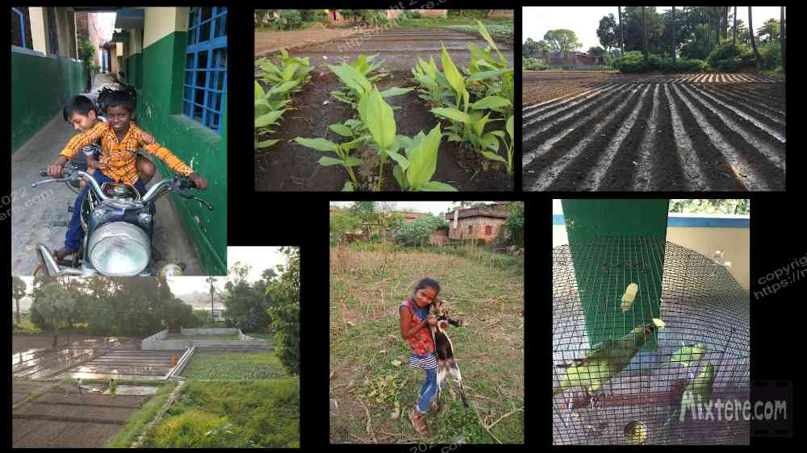
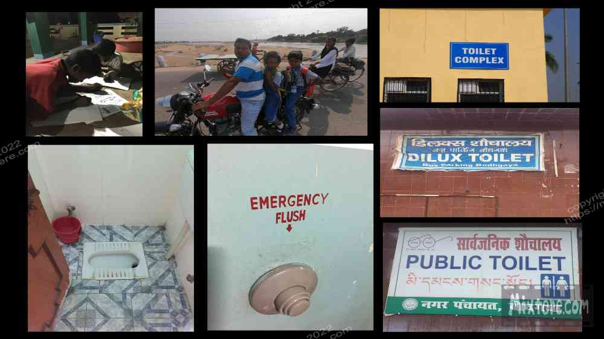

I recuperated at the guesthouse and tried to hold off the impulse to do things for a few days. Being a sensitive instrument and not a traveler of the leathered variety, my soul was treading water in the transition that I had thrust it into. I was only a few days removed from the journey on the “time machine.” People say not to make any big life decisions for a week or so after crossing the international dateline. I recalled this statement and in my addled state recognized its truth. The heat seemed oppressive and the air foul. People in town said the air [that time of year] was bad and prone to foster illness. “Bad weather,” They would tell me. I don’t know what truth there was to this but my body seemed to mirror it. It ached. My very brain hurt. Additionally, the sun was out when my body was ready to say goodbye to it and visa versa. The noises of the village streamed in through my windows as I tossed and turned. Despite my condition life was continuing full-force in the village outside my room.
The Imam’s calls to prayers streamed in from the loudspeakers and merged with the cacophony of competing sound systems blasting the latest hits. Iz had his helper Subi bring me Tulsi tea and hot salt water for gargling. The effort was appreciated and needed. However, in retrospect I think that consuming these drinks may have contributed to illness that was to come. I tried in vain to sleep. In place of this, I tried to focus on holding-off hyperactive impulses. Keeping my body horizontal as much as possible, I slowly recovered.
The guesthouse and the village it surveyed were teeming with life. Above the 3 floors a rooftop level opened out to vistas of the village and fields. This was the common area where cooking, eating, studying and hanging out was done.
Iz and his wife had an apartment on that top level that overlooked everything. Above that was a rudimentary platform on which sat a giant water tank. Much of the plumbing in India is based on this sort of basic gravity-based system. The neighboring buildings also had tanks on the roof. The reliable sun did the heating of this water instead of the sporadic electricity.
On the fourth floor was a common area with a common sink and mirror station. Here a trickle of teenage residents would stop by to comb their hair, brush their teeth or check the status of their pimples. In this area animals and residents of all ages were all about. Next to the kitchen there was a very friendly rabbit that hung out and roamed free from its cage a good deal of the time. It liked to beg your chapatis during meals. Near the rabbit's home there was a cage with three green parrots in it. Sadly these birds did not get to leave their cage.
Apparently there used to be six of them but three had escaped and had settled in the trees above. The escapees did fly-bys of the property and produced quite a chatter perched up in the palms. Their incarcerated brethren squawked urgent responses from the cage, talking about their freedom no doubt. I cringed at the sight of the intelligent caged birds and secretly rallied for their cause. But alas, I could not interfere.
Wild doves and squirrels came and hung out on the rooftop with us. Birds, dragonflies, butterflies and countless other insects fluttered about. I noticed a beautiful stick bug hanging out in the parrots’ cage, completely unmolested by the birds. From the perspective of the rooftop you could sit and observe the village activities. In the distance the spire of the Mahabodhi rose from the dust of Bodh Gaya.
Sounds of life reverberated off the neighboring brick walls and floated up with the heat and rich aromas of the fertile earth. The audible collage was infinitely layered. The prominent contributors were engines, horns, human and animal voices, construction work, and the calls to prayer and the sound systems that I referred to. The display of life was welcome, though naturally overwhelming. But my experience of India always was.
During dinner I would turn on some music, bring out pencils and paper, draw and encourage anyone interested to join me. A pair of Dalit brothers and often some others would draw with me. Sometimes Subi would pop out of the kitchen and draw with us too. I tried to encourage them all to express themselves freely on the paper and suspend judgement about what they produced. But they mostly stared, intimidated at the blank page.
It became clear that they would rather to learn how to replicate the simple cartoons I was making. And so regretfully I produced a couple of toons for them to try to draw. They immediately began working at this task. When the power died we’d light a few candles and continue. We were exposed and vulnerable to mosquitoes and what that could bring. I applied the “100% DEET” product that I had brought in bulk. This was because I had forgotten my four-hundred plus dollars worth of malaria medication in the refrigerator at home. The DEET would prove to be a potent poison for me later, but that is another tale. I tried not to linger outdoors too long during mornings and evenings. This was hard as these are the cooler, more social periods of time around the guesthouse. Sitting in my room alone, especially in the dark during a power failure, was too depressing. So I would apply more DEET and wander back out onto the rooftop with everyone else in the breezy, humid dark.
To simplify what is turning out to be a complex task of creating this web resource outside of I decided to tack on two pieces I prepared from my older blog. I feel that both are fitting side-notes to the story.
-Hundred Dolla' Holla'
A day or so after arriving Iz offered to help me with an errand at the bank. The goal was seemingly simple- to exchange two 100 dollar bills for Indian cash. Little did I know how ridiculous the errand was to prove to be Doing something I normally wouldn’t in the states, I hopped on the back of his Enfield Bullet and we rumbled into town. In the USA, riding on the back of a motorcycle means you are subservient to the driver. I held off my own cultural misgivings and held onto the seat to prevent from falling off. Riding on a motorcycle is a public display of sorts. It lacks the discretion that a car or even a rickshaw might offer.
On a bike there is a hierarchy displayed, the driver coming first, calling the shots, then you clinging to the back. But motorcycles or scooters are the common vehicles on the road here, and it is extremely common for whoever is present to just hop on and go. Entire families move this way. But I feel that the scenario I will describe is an example of how cultural experiences are uncomfortable almost by definition.

Riding on the bike I reflected upon a growing awareness of how white foreignness seemed an appealing thing that many Indians wanted themselves associated with. In this age of smartphones I had noticed the many requests for selfies and the instances of being video-streamed against my will. It seemed that in many circles Indians with a foreign friend are often popped up a notch in the social hierarchy.
I think this played into remnants of colonial brainwashing or caste-based beliefs, where preference for lighter skin or european-ness was hammered into people. The light skin thing was clearly visible in the advertisements pasted along the roads. Almost without exception filters had been applied to the photos of the spokesmodels to generate lighter skin. The populace did not even resemble these models and spokespersons.
So, displayed on the back of the Enfield with my large frame and blonde hair I imagined I was Iz's tourist trophy. You know, sort Iz's statement, “Hey everyone, look at the latest tourist I caught, staying at my guesthouse!” I felt sort of paraded through the town on the back of Iz’s Enfield. And when we reached the bank of India and Iz exchanged greetings with the many folk that he obviously knew, I definitely felt that I was being paraded through the bank.

This turned out to be a mere hiccup of discomfort when compared to the task of changing the two c-notes into rupees. It seemed that in the time that I had been away from India the whole practice of exchanging cash, in Bodh Gaya at least, had all but been eliminated. People simply withdrew from the ATM and accepted whatever that exchange rate was. So the staff of the bank was infinitely challenged with the task of turning my two hundred dollars into rupees. I cannot even begin to remember all of the steps but there were many. Many forms were filled out. I hand-wrote my personal info, passport and visa numbers, contact info on multiple forms multiple times. When staff were stumped I and my growing pile of paperwork were shifted to another staff member, where I was to fill out and sign more things. Around and around I went until I had practically interacted with every banker there. Eventually I ended up seated with a manager that had been procured for this most challenging of banking endeavors. After almost an hour in the bank, the task was finally completed.
I felt quite uncomfortable with the brick of rupees I now had strapped around my midsection. Since this experience I have had second thoughts about using money changers outside the bank. Perhaps these people will offer you a better rate and if not that, at least better service. I have not yet tried this but I never did attempt to exchange American cash in an Indian bank again.
Toilet Talk-
Firstly, I feel it is only right to go into what goes on behind bathroom doors or, in many cases, behind flimsy pieces of curtain or sheet metal. I feel compelled to write about this as the Indian toilet experience is an essential subject that many find fascinating, challenging and sometimes horrifying. I am not in the habit of taking my camera into the bathroom or walking around taking tours of turd-stations, so photographic accouterments will be sparse. But something has to be said about the toilet topic.
Ok, so many of you have heard horror stories of going to the bathroom in India. I am not going to lie and say that my gag reflex has not been prompted upon entry into many a train and public bathroom. It can be extremely challenging simply to prevent from falling into one, especially on the train.
But for the most part those instances are few and far between, experienced while deep into the journey when one is desperate and not "flush" with options to relieve oneself.
Let’s be honest, for most of you (and me at one time) the in-surmountable issue is that you wipe your bum with your bare hand! Yes, that just happened, I just said it. And is it really that big of a deal? Toilet paper has only existed for a hundred years or so. What is the big hoopla about?! Cultural conditioning and brainwashing, that’s what it’s about. Each culture has these hangups and India is no exception. But if you are to live at peace while traveling this land this issue must be addressed and then set aside. In truth the deed can be done completely hygienically with water and antibacterial soap and it is so much better for the environment because India has almost no sewage or waste management strategy in place.
Ok, let’s talk about ergonomics. After spending my entire life approaching a BM by settling upon a throne (western toilet) it took quite a lot of work and practice to become used to the Indian squat toilet. The position one assumes when using one of these is very different from what I had been used to. I did indeed find it difficult to assume the squatting position without tipping over. Tipping over is something that you really, really don’t want to do. Just like any physical feat , practice makes perfect in approaching the Indian toilet. As one becomes more intimate with the Indian toilet one develops new, stronger muscles and greater flexibility and strength. What becomes clear in time is that the squatting position actually facilitates the BM much better than the western toilet. The movement happens more naturally than it does when one is sitting on top of one’s bowels, as is the case when using Western “throne” toilets.
-Pay to... play.
In most cases it is necessary to pay five or ten rupees to use even the most rugged of public facilities. What you pay is based upon, what you are about to produce. So be prepared to discus this with the stranger posted at the door!
Anyways, during this trip I was having to relearn all this. And again, it took time for me to learn and reprogram myself, especially as a left-handed guy. But within a week or so the practice became a regular reflex and something not worth fretting over.